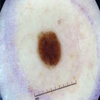
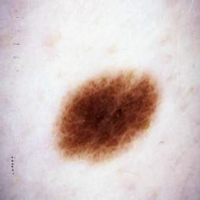
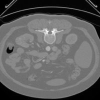

81 federated runs per dataset
Nine architectures, three starting weights and three aggregation methods, trained on three medical image sets. IEEE ISBI 2024.

Results for all 243 runs
Balanced accuracy on Fed-ISIC and accuracy on OrganAMNIST, from Tables 1 to 3. Rows run from the fastest architecture to the slowest. Pick a run to read it.
See the tables in the paperChanging the architecture moved federated results more than changing the aggregation method, and the best run on Fed-ISIC still uses FedAvg.
ImageNet weights won 25 of 27 times
For each architecture and dataset, the best ImageNet run beat the best random and self-supervised runs, except the two transformers on Fed-ISIC.
Federated ResNets do not scale
Depth and width helped central training but not federated training: ResNet-18 came out ahead of ResNet-50 and WRN-50-2 in most settings.
Federated transformers need pre-training
From random weights, ViT-B/16 and Swin-T did poorly. From ImageNet they came close to the CNNs, and DINO on skin images lifted both past their ImageNet runs on Fed-ISIC.
Three choices in every federated run
Clients share one set of hyper-parameters, with no tuning per client or per aggregation method. Fed-ISIC trains for 20 rounds, and every result averages two seeds.
9 architectures
- ResNet-1811.7M, BN
- NF-ResNet-5025.6M, SWS
- ResNet-5025.6M, BN
- WRN-50-268.9M, BN
- DenseNet-1218M, BN
- Swin-T28.3M, LN
- EfficientNetV2-S21.5M, BN
- ViT-B/1686.6M, LN
- ConvNeXt-S50.2M, LN
3 starting weights
Random
No pre-training, the case for images that do not fit ImageNet’s 224 by 224 RGB.
ImageNet
The standard supervised weights of each architecture.
DINO, self-supervised
Pre-trained on Skin-SSL for Fed-ISIC and on Abdomen-SSL for OrganAMNIST.


3 aggregation methods
FedAvg
The sample-weighted average of the client models.
FedOpt
Server SGD with momentum 0.6 and a cosine-annealed learning rate.
SCAFFOLD
Control variates against client drift, at twice the communication and three times the local storage.
Questions about ARIA
How do I cite the research?
@inproceedings{siomos2024aria,
title = {ARIA: On the Interaction Between
Architectures, Initialization and
Aggregation Methods for Federated
Visual Classification},
author = {Siomos, Vasilis and
Naval-Marimont, Sergio and
Passerat-Palmbach, Jonathan and
Tarroni, Giacomo},
booktitle = {2024 IEEE International
Symposium on Biomedical Imaging (ISBI)},
pages = {1--5},
year = {2024},
organization = {IEEE},
doi = {10.1109/ISBI56570.2024.10635565}
}
Which federated aggregation method should I use?
On Fed-ISIC, SCAFFOLD added 1.32 points of balanced accuracy over FedAvg on average and FedOpt cost 0.59, yet the best Fed-ISIC run uses FedAvg. Weigh SCAFFOLD’s doubled communication.
Should my federated model be a transformer?
Only with pre-trained weights. From scratch they did poorly, and from ImageNet the CNNs stayed marginally ahead. Self-supervised weights from similar images lifted them past their ImageNet runs on Fed-ISIC.
What if ImageNet weights do not fit my images?
Pre-train with DINO on related public images. On Fed-ISIC, Skin-SSL weights lifted every architecture over random weights, and ConvNeXt-S with SCAFFOLD came within 0.52 of the best run.